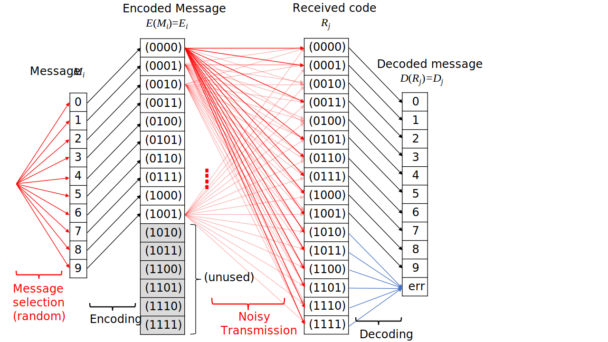
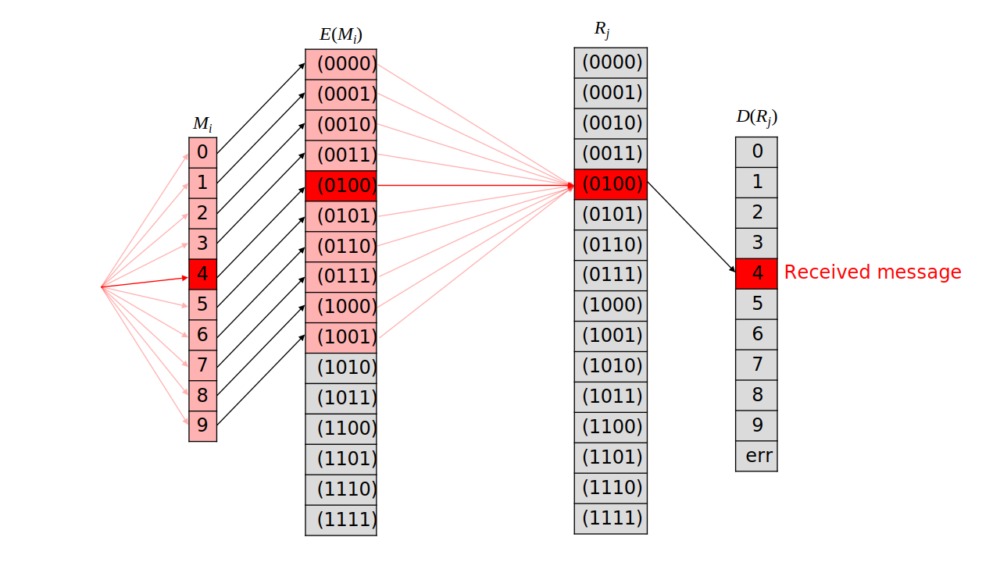
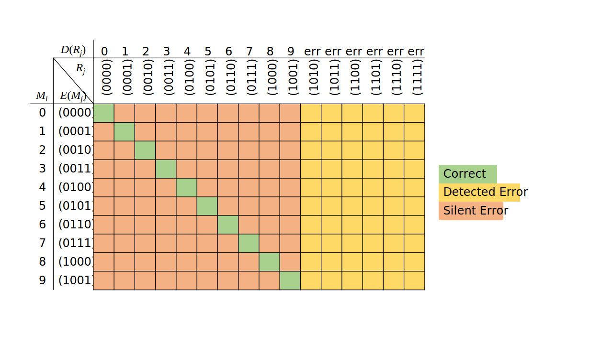
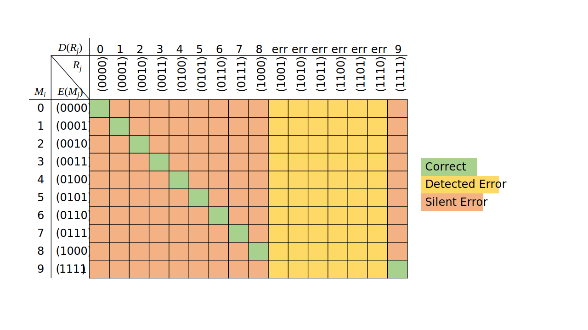
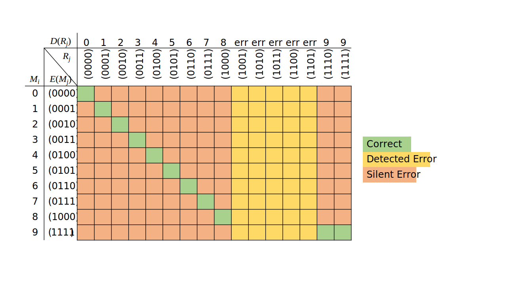

Conditional Probability#
Conditioning updates probabilities by incorporating (partial) information in the form of conditioning events. The conditioning operation is crucial for virtually every application of probability theory, but this notebook will focus on Information Theory and, more specifically, Channel Coding (a.k.a. Error Detection and Correction). This is the study of codes for communicating over noisy channels, and has applications anywhere from WiFi to computer memory devices. Interestingly, the performance, and hence design, of such codes relies crucialy on probability theory.
Binary Symmetric Channel#
Assume the basic channel coding setup: Alice wants to transmit a “message” to Bob over over a binary channel (e.g. wire with on=1/off=0 states). The message could be anything (e.g. a number, word, or image), but it has to be encoded into a binary string for sending over the channel. Similarly, Bob has to decode the binary string he receives to convert it back to the original message. The convention for encodind and decoding is called the code.
.svg)
If the communication channel was perfect, the choice of code would be straightforward: we would use the most succinct (i.e. shortest) mapping of messages to binary strings. But the channel is “noisy” and can randomly change states with equal probability \(p\) of switching from 0 to 1, and vice-versa; this classical setup is called the binary symmetric channel.
Binary Representation Code#
To fix ideas, assume the message is a digit in 0-9, and that all digits are equally likely. In other words, without receiving any message (no information) Bob would expect a digit in 0-9 with equal probability. Each message is then encoded into a binary sequence of 0’s and 1’ according to some encoding function \(E()\). The coded message is then transmitted over the channel, and Bob receives a (possibly corrupted) signal, which is then decoded into a message or an error (\(err\)), according to the decoding function \(D()\). There are different ways to treat errors, depending on whether the channel allows for two-way communication (e.g. Bob can request a repeat if he gets an error), but to keep things simple we assume only one-way communication.
To fix ideas, let our coding scheme map the 10 messages/digits, denoted \(M_i,\; i=0,\ldots,9\) onto their classical binary representation, i.e. \(E(0)=(0000)\), \(E(1)=(0001)\), up to \(E(9)=(1001)\). We use strings of length 4 because we need at least \(\log_2(10) = 3.3219\) bits to represent 10 numbers. This leaves us with \(2^4-10=6\) unused strings, which the decoder maps to an error; the entire coding scheme is represented below: 
Conditional Probabilities#
Note that there are two sources of randomnes, represented in red:
the choice of message (from the perspective of Bob, who doesn’t know Alice’s intentions), and
the noisy transmission.
The encoding and decoding are deterministic 1-to-1 functions (black arrows). Without information (i.e. received code), Bob knows that every message (digit) is equally likely to be chosen by Alice. Let’s represent this by assigning events \(M_0,\ldots,M_9\) for each digit, where \(P(M_i)=.1, \; i=0,\ldots,9\).
When Bob obtains information in the form of the received code \(R_j\), he updates the message probabilities accordingly. He is now interested in \(P(M_i|R_j)\), but this probability is not directly available.
Nevertheless, we know \(P(R_j|M_i)\) from the binary symmetric channel assumption, since the probability of any error (flipped bit) is \(p\), independently of other errors. For example, for message \(M_1=\{1\}\) with \(E(M_1)=(0001)\) the probability of receiving code \((0100)\) (\(R_4\)) is \(p^2 \times (1-p)^{4-2}\), because the codes differ by 2 bits, so there were 2 errors and 4-2=2 correct bits (their location is irrelevant). More generally, we have:
where \(d_{ham}(\cdot, \cdot)\) is the Hamming distance, i.e. the number of differring characters in two strings of the same length. Assuming the transmission error probability is \(p=5\%\), we can calculate all conditional probabilities of the form \(P( R_j | M_i ),\; j=0,\ldots,9, \; i = 0,\ldots, 15\) in the \(10 \times 16\) matrix P_RgM, where the row index represents the message, and the column index the received code.
import numpy as np
# List of all possible codes
codes = []
for j in np.arange(2**4):
codes.append( np.binary_repr(j, width = 4) )
# Hamming distance function (from https://en.wikipedia.org/wiki/Hamming_distance)
def hamming(string1, string2):
dist_counter = 0
for n in range(len(string1)):
if string1[n] != string2[n]:
dist_counter += 1
return dist_counter
# Distance matrix of all codes
dist_mat = np.ones( [ len(codes), len(codes) ] )
for i in range(len(codes)):
for j in range(len(codes)):
dist_mat[i,j] = hamming( codes[i], codes[j] )
p = .05 # transmission error probability
# We use only the relevant rows (first 10) of the distance matrix
# to caclulate the conditional probabilites
P_RgM = ( p ** dist_mat[0:10,:] ) * ( (1-p) ** ( 4 - dist_mat[0:10,:] ) )
The rows of P_RgM sum to 1, since each row represents a conditional probability measure, conditional on the (encoded) message.
np.sum( P_RgM, axis = 1 ) # take row sums of matrix P_RgM
array([1., 1., 1., 1., 1., 1., 1., 1., 1., 1.])
We can now answer questions such as: If Bob received \(R_4=(0100)\rightarrow D(R_4)=4\), what is the probability that Alice actually sent \(M_4 = \{4\}\) ?, (This is an extension of Execise 2.12.(a) from B&W).  We are looking for \(P(M_4|R_4)\) but we know \(P(R_4|M_i)\) and \(P(M_i)\) for all \(i=0,\ldots,9\), which is exactly the setup for Bayes rule: $\( P(M_i|R_j) = \frac{ P(R_j|M_i) P(M_i) }{ P( R_j) } = \frac{ P(M_i \cap R_j) }{ \sum_{i} P( M_i \cap R_j) } \)$
The main ingredient in both numerator and denominator are the joint probabilities \(P(M_i \cap R_j) = P(R_j|M_i) P(M_i)\), which are found by multiplying each element of the conditional probability matrix with the appropriate message probability. In our case, since all messages are equally likely, we can just multiply every element of P_RgM by 0.1.
P_MR = P_RgM * .1
The probability \(P(M_4|R_4) = \frac{ P(M_4 \cap R_4) } { \sum_{i=0}^{9} P(M_i, R_4) } \) is
P_MR[4,4] / sum( P_MR[:,4] )
0.8552369077306735
We can look at the probabilities of all messages given \(R_4\), of which \(P(M_4|R_4)\) is the most likely.
import matplotlib.pyplot as plt
plt.bar( np.arange(10), P_MR[:,4] / sum( P_MR[:,4] ) ) # barplot of conditional probabilities
plt.show()
Notice how the conditional probability \(P(M_3|R_4)\) is much smaller than \(P(M_0|R_4)\), which means that if Bob receives \(R_4\), Alice is more likely to have sent \(M_0\) rather than \(M_3\). That’s because the conditional probabilities rely on the Hamming distances of the codes, which are not necessarily similar to the numerical distances of the messages/digits. The tesseract plot below illustrates the Hamming distances of all 4-digit binary codes, given by the minimum number of hops between two node/codes.

Code Performance#
For overall code performance, we look at the probability of decoding the correct message, as well as the probability of errors, either detected or undetected. In our example, the overall probability (across all messages) of a correct communication is $\( \sum_{i=0}^{9} P( M_i \cap R_i ) \)$ This is given by the sum of the diagonal elements of the joint probability matrix, according to the following plot: 
sum( np.diag(P_MR) )
0.81450625
The probability of a detected error, i.e. of received code mapping to \(err\), is \( \sum_{i=0}^{9} \sum_{j=10}^{15} P( M_i \cap R_j )\), which is the sum of the last 6 columns of P_MR
np.sum( P_MR[:,10:16], axis=None)
0.048525000000000006
And the probability of an undetected error is the sum of the off-diagonal elements of the \(10\times 10\) sub-matrix
np.sum( P_MR[0:10,0:10], axis=None) - sum( np.diag(P_MR) )
0.13696874999999975
There is a 13.7% chance of getting an undetenced error, i.e. receiving a code that maps to a different message (but not \(err\)) than the intended one.
Modified Code#
Now that we know how to measure code performance, we can test different coding schemes. The basic idea is to employ a coding scheme that maps messages “far apart” from each other (in an appropriate distance function) so as to minimize the probability of mixing them up. For example, let’s change the coding scheme so that \(9\) maps to \((1111)\), which is farther apart from the other codes in Hamming distance, and hence less likely to get mixed up. The joint probability matrix for this scheme is shown below (note the change in the last row’s code):  and caclulated as:
P_MR_v2 = ( p ** dist_mat[ [0,1,2,3,4,5,6,7,8,15], :] ) * \
( (1-p) ** ( 4 - dist_mat[ [0,1,2,3,4,5,6,7,8,15], :] ) ) / 10
The overall probability of correct transmission is the same as before; this is straightforward to prove by symmetry. Therefore, the total probability of incorrent transmission is also the same, but the difference lies in the probability of detected vs silent errors. The probability of a detected error is now
np.sum( P_MR_v2[:,9:15] )
0.057075
and the probability of a silent error is
1 - sum( np.diag( P_MR_v2[:,[0,1,2,3,4,5,6,7,8,15]] ) ) - np.sum( P_MR_v2[:,9:15] )
0.12841875000000014
This is lower than the previous probability of 13.7%. The take-away is that mapping messages farther appart allows us to better detect errors.
Error Correction#
Another common strategy is to automatically correct errors, by mapping mistakenly transmitted codes onto their likely original messages, which is called forward error correction. In the modified example above (\(9 \leftrightarrow (1111)\)), assume we also decode \((1110)\) onto the digit \(9\), since \((1110)\) is less likely to have come from other messages (except for \(6 \leftrightarrow (0110)\), but ignore this). The probability of correct transmission now includes an extra code, at the expense of inflating the probability of silent errors, as shown below:  The probability of correct transmission is now slightly higher:
sum( np.diag( P_MR_v2[:,[0,1,2,3,4,5,6,7,8,15]] ) ) + P_MR_v2[9,14]
0.8187931249999999
but the probability of a silent error also increased:
np.sum(P_MR_v2[:,[0,1,2,3,4,5,6,7,8,14,15]], axis = None) - sum( np.diag( P_MR_v2[:,[0,1,2,3,4,5,6,7,8,15]] ) ) - P_MR_v2[9,14]
0.13364437499999973
Redundancy#
For fixed code length, there will be trade-offs between correct transmission, detected/corrected, and silent errors. But there is a way to improve all metrics by introducing redundancy, i.e. transmitting more bits that the absolutely minimum necessary. Essentially, this “expands” the space of possible codes so that you can map messages farther apart.
But redundancy introduces also concerns of efficiency: for example, you could transmit a digit with miniscule probability of error using a 1000-bit code, but that would use up too much time and resources for transmitting 1000 instead of 4 bits. There is actually a celebrated theorem that provides the optimal trade-off between the accuracy and redundancy (code length) of a channel, unfortunately without identifying the optimal code that achieves it; ironically, the theorem’s proof uses random codes! In fact, even for “simple” setups such as the above, finding the optimal code is an open problem.
Problems#
Assume the original setup above, i.e a binary symmetric channel (\(p=.05\%\)) with binary representation for the 10 digits. To minimize errors, you decide to transmit every bit in the binary representation 3 times, and take the majority bit as received; this is an example of a repetition code. E.g., \(2\) would be mapped to \((0010)\), which would be transmitted as \(((000)(000)(111)(000))\). At the other end, if Bob received \(( (010) (\cdots)(\cdots)(\cdots) )\), he would automatically correct \((010)\) to \(0\), since 2/3 bits are \(0\), etc. Find the probability of correct transmission for this scheme; this is a simple enough analytical caclulation that does not require Python.
(Note: This is an extension of Execise 2.12.(b) from B&W. )Consider the two-out-of-five code, where each digit is mapped to a 5-bit string with two \(1\)’s and three \(0\)’s, as follows: | Digit | Binary Code | |:—–:|:——:| | 1 | 00011 | | 2 | 00101 | | 3 | 00110 | | 4 | 01001 | | 5 | 01010 | | 6 | 01100 | | 7 | 10001 | | 8 | 10010 | | 9 | 10100 | | 0 | 11000 |
There are exactly \( { 5 \choose 2 }= 10\) such codes, all either 2 or 4 bits apart in Hamming distance. Using a binary symmetric channel with \(p=5\%\), calculate the probability of correct transmission, detected error, and undetected error.
(Note there is no error correction in this scheme, any received code without two \(1\)’s is mapped to \(err\)).

This work is licensed under a Creative Commons Attribution-NonCommercial-ShareAlike 4.0 International License.